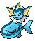
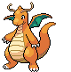

-
Bulbasaur #001

- Grama
- Veneno
Bulbasaur pode ser visto tirando uma soneca ao sol. A semente nas suas costas cresce cada vez mais a medida que absorve os raios solares..
-
Vulpix #037

- Fogo
Ao nascer, Vulpix tem uma cauda branca. A cauda se separa em seis se este Pokémon recebe bastante amor de seu treinador. As seis caudas se encaracolam majestosamente.
-
Ninetales #038

- Fogo
Ninetales emite uma luz sinistra de seus olhos vermelhos para controlar totalmente a mente de seus oponentes. Diz-se que este Pokémon vive por mil anos.
-
Arcanine #059

- Fogo
Arcanine é conhecido por sua alta velocidade. Dizem que é capaz de percorrer mais de 10 mil quilometros em um único dia e noite. O fogo que arde com vigor no corpo deste Pokémon é sua fonte de poder.
-
Gengar #094

- Fantasma
- Veneno
As vezes, em uma noite escura, sua sombra projetada pela luz da rua irá dominar você de repente. É na verdade Gengar fingindo ser sua sombra.
-
Vaporeon #134
- Água
Vaporeon sofreu uma mutação repentina e cresceu brânquias e barbatanas que permitem que viva na água. Este Pokémon tem a habilidade de controlar água.
-
Articuno #144

- Gelo
- Voador
Articuno é um Pokémon pássaro lendário que pode controlar gelo. O bater de suas asas esfria o ar. Dizem que começa a nevar quando este Pokémon voa.
-
Dragonite #149
- Dragão
- Voador
Dragonite é capaz de dar a volta no mundo em apenas 16 horas. Tem um coração bondoso e guia para terra barcos perdidos durante tempestades.
-
Mew #151

- Psíquico
Dizem que Mew possui a composição genética de todos os Pokémon. É capaz de ficar invisivel quando quer para passar desapercebido quando alguém se aproxima.
-
Bayleef #153

- Grama
O pescoço de Bayleef é rodeado de folhas. Dentro de cada folha tubular há um broto de árvore. O cheiro dos brotos anima as pessoas.